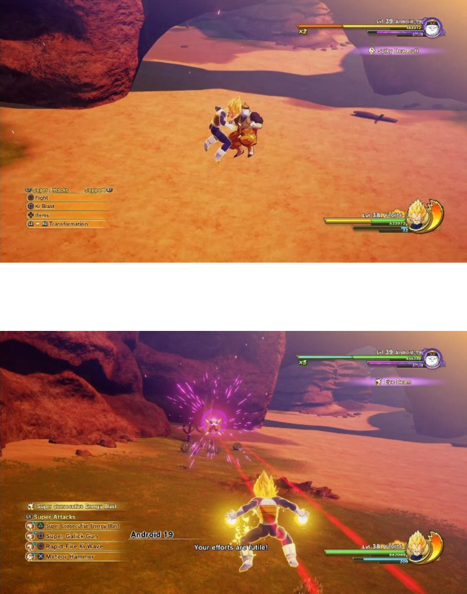
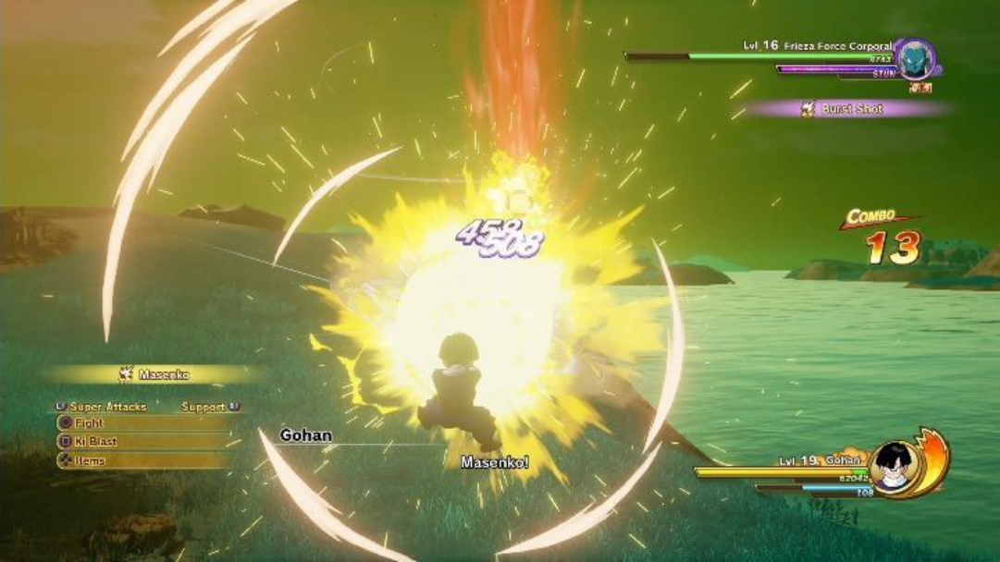
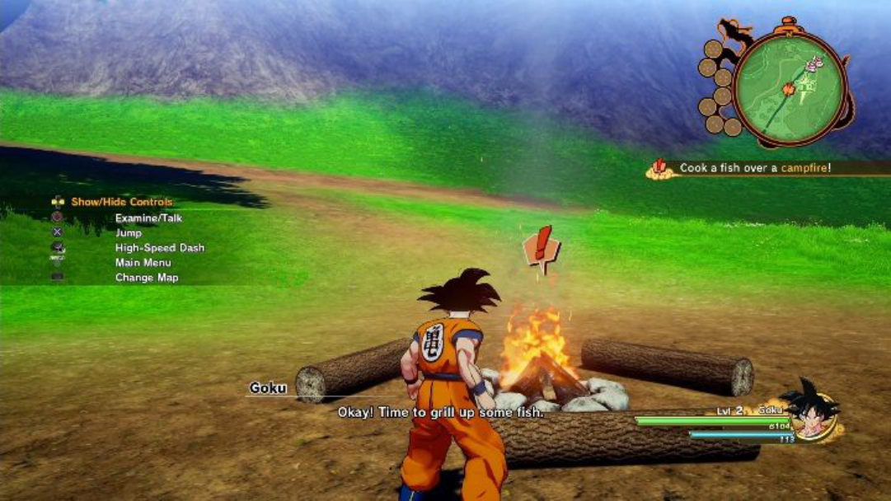
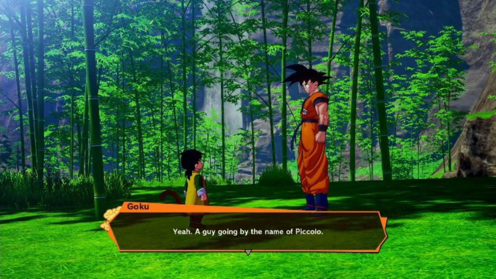
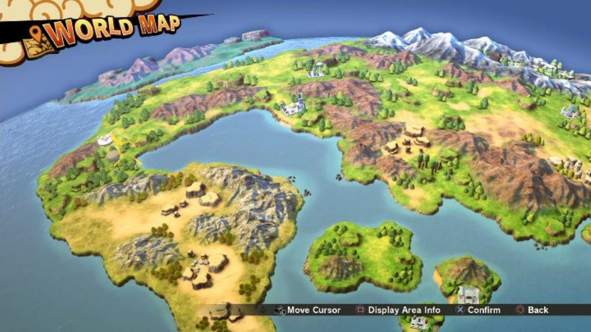
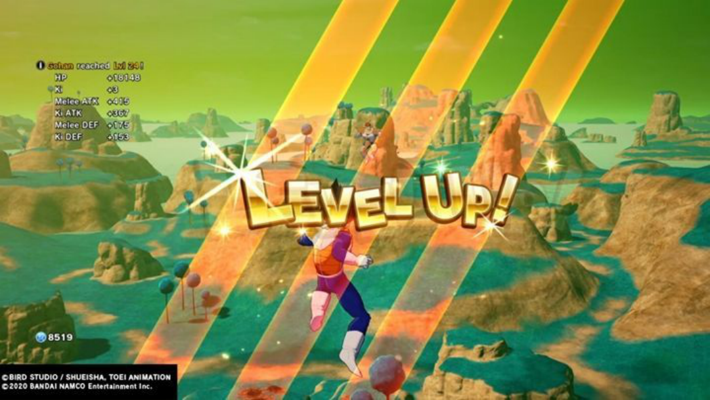

Dragon Ball Z Kakarot Kakarot guide,
walkthrough
Table content
Best tips for Dragon Ball Z Kakarot Kakarot guide, walkthrough
Unlocking new techniques | DBZ Kakarot basics Kakarot guide, walkthrough
Combat system | DBZ Kakarot basics Kakarot guide, walkthrough
Exploration and fighting with enemies | DBZ Kakarot basics Kakarot guide, walkthrough
Character progression system | DBZ Kakarot basics Kakarot guide, walkthrough
Hunting and fishing | DBZ Kakarot basics Kakarot guide, walkthrough
Cooking and eating | DBZ Kakarot basics Kakarot guide, walkthrough
Saving progress | DBZ Kakarot basics Kakarot guide, walkthrough
Items | DBZ Kakarot basics Kakarot guide, walkthrough
Community | DBZ Kakarot basics Kakarot guide, walkthrough
Dragon Balls | DBZ Kakarot basics Kakarot guide, walkthrough
Map | DBZ Kakarot basics Kakarot guide, walkthrough
Z Orbs | DBZ Kakarot basics Kakarot guide, walkthrough
Turtle School Training Manuals | DBZ Kakarot basics Kakarot guide, walkthrough
Recipes | DBZ Kakarot basics Kakarot guide, walkthrough
Soul Emblems | DBZ Kakarot basics Kakarot guide, walkthrough
List of all bosses in Dragon Ball Z Kakarot Kakarot guide, walkthrough
Vegito and Gotenks | Boss in Dragon Ball Z Kakarot Kakarot guide, walkthrough
Mira | Boss in Dragon Ball Z Kakarot Kakarot guide, walkthrough
How to avoid a fight in DBZ Kakarot? Kakarot guide, walkthrough
How to achieve instant victory in DBZ Kakarot? Kakarot guide, walkthrough
How to level up fast in Dragon Ball Z Kakarot? Kakarot guide, walkthrough
How to make a lot of money in Dragon Ball Z Kakarot? Kakarot guide, walkthrough
How long to complete Dragon Ball Z Kakarot game? Kakarot guide, walkthrough
System requirements of Dragon Ball Z Kakarot Kakarot guide, walkthrough
Controls of Dragon Ball Z Kakarot Kakarot guide, walkthrough
List of trophies - achievements in Dragon Ball Z Kakarot Kakarot guide, walkthrough
Best tips for Dragon Ball Z
Kakarot Kakarot guide,
walkthrough
This page has starting tips for DBZ Kakarot. We have included various hints for the
mechanics and situations that may cause you problems within the first hours of the
game. Many of the topics described below have been discussed on other pages of
the guide, including the FAQ section.
Watch your health
Complete substories
Take care of your finances
Collect Z Orbs
Invest in healing items
Pay attention to your opponents
Develop your super attacks
Sell unnecessary items
Rest at a campfire
Train your character
Take care of your Ki bar
Watch your health

While exploring the world in DBZ Kakarot, you will encounter a large number of
opponents. Not every fight can be skipped - you should always be ready for them.
Restore your health between the fights - you can do that by eating food or resting by
the fire. This way, you will avoid unnecessary frustration when you encounter an
opponent while having low health.
Complete substories
Side missions are marked on the map with a blue icon.
They provide not only additional adventures, but also great rewards. Complete them
to receive experience points, D Medals, and many other interesting items.
Substories also help you develop the characters to make them invincible.
Take care of your finances
The world is full of merchants offering quite a lot of items. You can also sell them
almost everything.
At the beginning of the game, you can earn some gold by fishing and then selling
your catch.
Spend the money on any healing or strengthening items. These items will help you
in many battles.
Collect Z Orbs
You will find a lot of Z Orbs in the world DBZ Kakarot. You need them to develop
your character's attacks.
Don't ignore them. Try to use every opportunity to collect these valuable items.
Invest in healing items
The game is full of fights, meaning that it is highly probable that you will lose
health points. You can avoid that by purchasing healing items - Vitadrink, Vitadrink
M, Vitadrink L or Healade.

Thanks to them, you will be able to heal during battles against strong enemies.
Pay attention to your opponents

Your enemies have different attacks and most of them will try to surprise you. You
need to keep an eye on the enemies - some are able to heal; others take your energy
to regenerate.
If your opponent can heal without doing anything, it is possible that they are using
an attack that is somehow linked to your actions. You must match your attacks to
the enemy's behavior so that the fight won't last for hours.
Develop your super attacks
Collect Z Orbs to develop your super attacks. Thanks to them, you can improve
your character and increase your chances of winning.
Sell unnecessary items
Despite the fact that your inventory is limitless, you shouldn't carry everything with
you. Sell unnecessary items to have money for other, more important things, such
as medicaments.
Rest at a campfire
Use campfires located in different parts of the map. You can cook or rest there.
Resting by the fire regenerates Ki and the hero's life.
Train your character
Don't forget about training. They unlock new super attacks for your characters. This
way you will have even more power during fights.
Take care of your Ki bar
You need to control your Ki indicator. Thanks to it you can perform dodges and
super attacks.
Restore your Ki whenever you can by pressing the right buttons. This way it will be
easier for you to control the character's behavior.
Unlocking new techniques | DBZ
Kakarot basics Kakarot guide,
walkthrough
Post Comment 1 2
At the beginning of your adventure in Dragon Ball Z: Kakarot, you play as Goku
and the rest of the characters who has rather limited combat capabilities. This is
understandable since the game aims to match the development of heroes throughout
Dragon Ball Z. Read this chapter to learn how to unlock new techniques.
How to unlock new moves in Dragon Ball Z: Kakarot?
There are several ways of getting new techniques. The most important and easiest
way is to collect the balls scattered around the game world. These are the so-called
Z Orbs that allow you to unlock new abilities from the development tree of selected
characters. Interestingly, each of the playable characters has a different talent tree. Z
Orbs can be found in many places - their color depends on the region in which you
have found them (blue orbs are found underwater, green in a forest, etc.). Look for
these orbs to get more powerful moves for Goku and the rest of the team.
The second way to unlock new techniques is to participate in special training
sessions. During them, you will fight with the spiritual projection of the currently
controlled character, for example, Goku against Goku, or have a duel with already
defeated enemies. To start training, you need to find special training spots and have
a sufficient number of D medals. These items are also found in the game world.
They are buried in various difficult to access places.
You can also get soul emblems - you get them from NPCs. You will receive these
items by making progress in the storyline or after completing additional tasks.
Emblems can be used to develop the community board, which will allow you to
gain access to new skills.
Combat system | DBZ Kakarot
basics Kakarot guide,
walkthrough
Post Comment 0 2
This page of our guide has information about the combat system used in Dragon
Ball Z: Kakarot. You will learn how to fight, how to control your health, and how to
protect yourself from attacks.
Health points
Ki bar
Attacks
Enemy health status
Stun indicator
Several ways to avoid damage
Guard endurance
Super attacks
Boost
Health points
Your health bar is displayed in the lower right corner of the screen. Keep an eye on
it if you want to win battles.
If your health drops significantly, you can restore it. Information on how to
regenerate health can be found on a separate page of the guide.
Ki bar
The Ki bar is right next to the health bar. It determines the number of super attacks
you can perform.
If your Ki drops significantly, you can restore it. Information on how to regenerate
health can be found on a separate page of the guide.
Attacks
In order to fight well, you must learn the controls. Each element of the combat
system is assigned to a different button.
The battle controls are displayed on the left side of the screen.
Enemy health status
The enemy's health bar is displayed in the upper right corner of the screen.
This way you can evaluate which attacks will be the best in a given situation and
how to act.
Stun indicator
The stun indicator is displayed below the enemy's life bar. When it gets depleted,
the enemy won't be able to attack you for a while.
This is the perfect opportunity to inflict heavy damage on the enemy. Enemies in
this state can't protect themselves which makes them an easy target.
Several ways to avoid damage
During the battle, you can protect yourself in several ways.
Guard
Use guard to protect yourself from attacks.
A blue shield will appear right in front of your hero.
You can use guard even during an enemy attack to reduce some of the damage
received.
Step
A step must be performed right when the enemy begins to attack you. You can't use
step during an attack.
A successful step will cause the enemy to go into a slow-down state. This is an ideal
opportunity to counterattack.
Guard endurance
A guard activates a blue shield in front of you - the attacks blocked with guard will
change the shield's color.

Red indicates that your guard will soon end. You have to step back to avoid getting
damage.
If your guard runs out, you will be defenseless for a few tens of seconds.
Super attacks
Before using a super attack, you need to open the attack palette and choose which
one you want to perform.
Choose super attacks accordingly to your opponent's health and skills - you want to
be sure that you won't waste your attack and the opportunity to deal damage.
If the enemy moves away from you while you are using a super attack, you can
draw them to you to continue dealing damage.
Super attacks can be developed in the skill tree.
Boost
To activate the boost, you need to charge two bars - Ki and Tension Gauge. Both
are marked in the screenshot above.
When the boost is activated, your stats will be increased temporarily.
You can also interrupt the enemy's super attacks and regular attacks.
Exploration and fighting with
enemies | DBZ Kakarot basics
Kakarot guide, walkthrough
Post Comment 1 2
This chapter of the guide to Dragon Ball Z: Kakarot focuses on combat mechanics.
Here you will find a step-by-step guide on how to fight battles and learn a few tips.
You will also learn more about exploration.
Exploration in Dragon Ball Z: Kakarot
The game doesn't feature a completely open world. The game area has been divided
into very extensive sectors that will be unlocked as the story progresses. Once you
discover an area, you will be free to explore it. Your character can fly, run with
stunning speed, or use, for example, the Nimbus cloud. You will also find many
additional secrets, such as the titular dragon balls and numerous side activities.
The available activities are unique to specific zones. Sometimes you can complete
side quests, participate in optional fights, or play mini-games. You can also collect
Z Orbs that you can spend on new techniques. You can return to locations at any
point of the game which means that you can leave exploration for later. If we want
to go to another location, just fly high up and you will be able to choose the next
destination.
Combat in Dragon Ball Z: Kakarot
Dragon Ball Z: Kakarot recreates the main events from the cult Dragon Ball Z.
Your heroes face increasingly powerful enemies - your task is to develop their
abilities to make sure that the heroes are strong enough. The game is full of battles.
Even though the game has other side activities, you will spend the majority of your
time on fighting enemies.
The game focuses on fighting increasingly powerful enemies that should be known
to every DBZ fan. Each enemy has a certain level, which affects their power,
amount of damage dealt, and so on. Opponents who have a higher level than ours
will deal much more damage making these battles a real challenge. If we fight low-
level opponents, we will be able to defeat them in no time.
The combat system is a bit like the one used in the Xenoverse series or the older
Tenkaichi Budokai titles. We will fight on the ground and in the air, use iconic
techniques such as Kamehameha, or transform mid-fight.
Character progression system |
DBZ Kakarot basics Kakarot
guide, walkthrough
Post Comment 1 3
This section of the guide to Dragon Ball Z: Kakarot focuses on the character
progression system. You will learn how to develop your character and where to get
development points. Z Warriors (Goku, Piccolo, Tien, Yamcha, Krillin, and later
Vegeta) can develop in various ways, which we have described below.
Combat
Cooking and food
Collecting Z Orbs
Training
Community Board
Combat
Combat is the main activity in the game. You gain experience by winning fights. If
your character gains a new level, they increase their statistics: HP, Ki, ATK / Ki
ATK (strength of physical attacks, special techniques), Melee DEF / Ki DEF
(protection from physical attacks and special attacks). Thanks to the game's open
world structure, enemies can be easily found on the world map. If we want to, we
can spend some time on the so-called grinding - killing opponents to strengthen our
character to face a difficult enemy.
Cooking and food
Our heroes are fighting a real invasion of enemies, so it is not surprising that they
have a huge appetite. You can buy different dishes, cook food on the fire (you can
fish!), or ask Chi-Chi to cook a delicious meal. In addition to a temporary stat
boost, you will receive permanent bonuses for your character.
Collecting Z Orbs
You will very quickly come across orbs with the letter Z. They are the so-called Z
Orbs you need to unlock new techniques. These orbs are in different places, and
their color often coincides with the territory (green balls in forest areas, blue found
underwater, etc.). Different techniques require different numbers of orbs, so
remember about collecting them while you are exploring the world.
Training
Training areas are found in various locations. To use them, you need D medals,
special items that are hidden in different parts of the world. You train by fighting
spiritual projection of a given enemy - it is possible to duel with yourself (Goku vs
Goku, etc.), or fight with already defeated enemies.
Community Board
The last way to develop a character is to use the so-called Community Board. As
you progress through the main story or complete missions, you receive emblems.
These soul emblems can be placed on community boards, which will give access to
new techniques, or unlock passive skills. There are seven different community
boards, each offering different bonuses - a lot also depends on the placed emblems
because it is possible to create a unique connection between tokens which activate
all sorts of link bonuses.
Hunting and fishing | DBZ
Kakarot basics Kakarot guide,
walkthrough
Post Comment 3 3
This page of our guide to Dragon Ball Z: Kakarot has information about hunting
and fishing.
Hunting
Hunting dinosaurs
Fishing
Campfires
Hunting
Hunting in Dragon Ball Z: Kakarot is very simple. You only need to approach the
selected animal and press the appropriate button.
Most animals will just run away from you, so the only requirement is to chase them
to get their meat.
Hunting dinosaurs
To kill a dinosaur, you must first attack it. Deplete its HP bar and then approach to
collect the items that fell out of it.
Fishing
You can only catch fish in designated areas.
Before you start fishing, you can choose the bait. It can be purchased or found in
the game world.

Fishing is about pressing the corresponding button at the right moment and then
hitting the fish. This is how you get food.
Campfires
Campfires can be found in all parts of the world. Thanks to them, you can cook
meat to restore your health or strengthen your statistics.
Cooking and eating | DBZ Kakarot
basics Kakarot guide,
walkthrough
Post Comment 1 4
This chapter of our guide to Dragon Ball Z: Kakarot has information about cooking
and eating food. This element of the game is quite complex and affects the character
development.
Cooking and eating in Dragon Ball Z: Kakarot
The best solution to satisfy hunger and increase statistics...is cooking and eating
food. Our heroes can hunt big dinosaurs and fish by taking part in simple mini-
games. Thanks to this, we get materials for cooking that we can use, for example,
when camping by the fire. You should try to hunt various animals and regularly eat
dishes to strengthen the character.
Of course, it is also possible to purchase ready-made dishes. Some characters in the
game world can cook us a delicious dish that permanently increases the statistics of
our heroes. If we want someone to cook for us, we need to get the ingredients first.
By making progress and completing various tasks, you will receive new recipes for
dishes that will give you better bonuses. There is also the option to ask Chi-Chi,
Goku's wife, to prepare a meal. Better ingredients will result in a more filling dish
with greater stat bonuses.

Saving progress | DBZ Kakarot
basics Kakarot guide,
walkthrough
Post Comment 1 3
This page of our guide has information on how to save your progress in Dragon
Ball Z: Kakarot. You will learn when Dragon Ball Z: Kakarot saves automatically,
as well as how to save manually.
Autosave
Manual save
Autosave
The game saves your progress automatically after completing a mission or battle.
Don't turn off the game while the save is being recorded - you don't want to damage
your file.
Manual save
You need at least 60 MB of free memory to save the game manually.
To save the game, you must open the menu and select the save option.
Your next task is to select the slot where the game should be saved.
Note that if you overwrite a file, you won't be able to restore the previous version.
Use other slots to go back to other story parts.
Items | DBZ Kakarot basics
Kakarot guide, walkthrough
Post Comment 1 2
This page of our guide has information about items found in Dragon Ball Z:
Kakarot. We have described their types, how to use them during exploration and
fights.
Types of items
Using items
Using items in combat
Types of items
Regeneration: items that restore your HP.
Cooking: items that increase your stats.
Materials: items needed for fishing, development, and crafting.
Gifts: items that you can give to someone.
Events: items used in missions or story events.
Using items
If you aren't in the middle of a fight, you can use an item by opening the right
menu.
Browse through the available items and select the one you are interested in.
Using items in combat
If you want to use items during combat, you must first place them in the available
slots. Choose an item and then the place in the available slot on the palette.
This way you can quickly use that item during combat. This is the best way to
restore the hero's health.
Community | DBZ Kakarot basics
Kakarot guide, walkthrough
Post Comment 1 0
In Dragon Ball Z: Kakarot, you can find a tab called community. It is mainly
associated with the Soul Emblems that provide you and your friends with various
bonuses.
How can I access the community tab?
Soul Emblems
Types of companions
Strengthening Soul Emblems
How can I access the community tab?
This option is available from the menu - simply select the "Community" option.
Soul Emblems
You can edit the Community Board and place the Soul Emblems received during
the.
It is up to you to allocate these emblems.
Types of companions
Each person who belongs to the community has a specific role. Assign emblems
accordingly to their role.
Skill bonuses are activated according to the placed emblems, and their overall level
increases the rank of the entire associated community. This way you will improve
your team's skills.
Warriors Community: skills that help in battle.
Training Community: increases the experience points earned in battle and the health
of the hero.
Community of the Gods: make it easier to get rewards.
Adventure Community: provide support in missions.
Cooking Community: improve the skills used during cooking.
Development Community: activates skills that help in developing your hero.
Adult Community: skills that help you earn Zeni effectively.
Strengthening Soul Emblems
Soul Emblems have two parameters: friendship and proficiency.
Gifts affect the increase of these parameters. To select a gift, you just need to check
the details of a given Soul Emblem and then find a specific gift.
Friendship: increases the chances of getting rare items.
Proficiency: increases the community level.
Dragon Balls | DBZ Kakarot
basics Kakarot guide,
walkthrough
Post Comment 1 0
In Dragon Ball Z: Kakarot, players come across Dragon Balls which are one of the
most interesting mechanics of the game. You will unlock them by making progress
in the story.
How to get Dragon Balls?
What are the Dragon Balls for?
Trophies/achievements
How to get Dragon Balls?
You unlock Dragon Balls by making progress in Dragon Ball Z: Kakarot's story.
Over time, they will begin to appear in the game world. Their location will be
marked on the map.
What are the Dragon Balls for?
Dragon Balls are used for fulfilling your wishes. When you have one of them, click
on it, and then select your wishes.
But remember that the number of wishes is limited, and a specific wish can only be
selected once.
After selecting a wish, click "Call Shenron". This will fulfill your wish.
Trophies/achievements
There are several achievements/trophies related to the Dragon Balls.
Shenron's Favorite
Trophy type: silver
How to unlock: Summon Shenron 10 times from the Dragon Ball menu to make a
wish.
Getting Greedy
Trophy type: bronze
How to unlock: Summon Shenron 5 times from the Dragon Ball menu to make a
wish.
Wish Maker
Trophy type: bronze
How to unlock: Summon Shenron from the Dragon Ball menu to make a wish.
Map | DBZ Kakarot basics
Kakarot guide, walkthrough
Post Comment 1 0
This page of our guide to Dragon Ball Z: Kakarot has information about the map.
You will learn how to read it and how to use this knowledge to your advantage.
Map
What can I see on the map?
World map
Map
The map of a given region shows the points related to the missions. In addition, you
can check out places of interest and reveal the position of enemies.
What can I see on the map?
You can use the map to determine your current location - we marked it in the
screenshot above.
The map also shows:
mission objectives;
side missions;
shopkeepers;
fishing spots;
hunting spots;
cooking spots;
training grounds;
resource deposits;
dinosaur lairs.
World map
You can switch from the area map to the world map. There you will find markings
for story and side missions.

Additional map areas will be unlocked as the story progresses.
Z Orbs | DBZ Kakarot basics
Kakarot guide, walkthrough
Post Comment 1 1
Collecting Z Orbs is one of the mechanics of Dragon Ball Z: Kakarot. You use
them to perform super attacks. Z Orbs can be collected during battle or exploration
of the map.
Types of orbs
How to collect more Z Orbs?
Time orbs
Types of orbs
The orbs available in Dragon Ball Z: Kakarot have different types. Their colors
depend on the areas where they can be found.
1. Wastelands - red;
2. Forests - green;
3. Water - blue.
How to collect more Z Orbs?
In each area, you can find special wind tunnels. They contain a lot of Z Orbs that
can be collected in one go.
Remember that some orbs can also be found under water. If you decide to dive, you
need to pay attention to the amount of oxygen your hero has.
Time orbs
Time orbs can be found during exploration. If you touch it, you will spawn orbs
nearby. However, they will remain active only for a limited time.
Turtle School Training Manuals |
DBZ Kakarot basics Kakarot
guide, walkthrough
Post Comment 1 1
One of the side activities available in Dragon Ball Z: Kakarot are Turtle School
Training Manuals. Usually, you will complete these tasks automatically by
completing story and side missions.
Azure Chapter
Combo Chapter
Alliance Chapter
Dragon Chapter
Combat Chapter
Viridian Chapter
Finance Chapter
Constitutional Chapter
Communication Chapter
Growth Chapter
Time Chapter
Iridescence Chapter
Connection Chapter
Culinary Chapter
Crimson Chapter
Leviathan Chapter
Ball Chapter
Competition Chapter
Azure Chapter
This section is about collecting Z Orbs on the maps.
A Fighter's Wisdom
Requirements: Get 100 blue orbs
Reward: D Medal
An Expert's Wisdom
Requirements: Get 500 blue orbs
Reward: D Medal
A Tactician's Wisdom
Requirements: Get 5,000 blue orbs
Reward: D Medal
A Seeker's Wisdom
Requirements: Get 15,000 blue orbs
Reward: D Medal
Combo Chapter
This section is about performing combos during fights.
A Fighter's Technique
Requirements: Perform 20 long combos
Reward: 3x Vitadrink
An Expert's Technique
Requirements: Perform 25 long combos
Reward: 4x Vitadrink
Alliance Chapter
This section is about the community.
Camaraderie between Fighters
Requirements: Increase your community rating to level 5
Reward: 2x Chicken, 3x Beast Meat, 3x Rice, 2x Apple
Camaraderie between Experts
Requirements: Increase your community rating to level 5
Reward: 3x Peach 3x Mango, 3x Milk
Camaraderie between Tacticians
Requirements: Increase your community rating to level 10
Reward: 3x Great Energetic Fish, 3x Plain White Rice, 3x Coconut, 5x High-
Quality Herb
Camaraderie between Seekers
Requirements: Increase your community rating to level 15
Reward: 3x Energetic Fish, 3x Wheat, 3x Shellfish
Dragon Chapter
This section is about finding the dragon balls.
A Fighter's Collection
Requirements: Collect one dragon ball.
Reward: D Medal
An Expert's Collection
Requirements: Collect five dragon balls
Reward: 2x D Medal
A Master's Collection
Requirements: Collect seven dragon balls
Reward: 5x D Medal

Combat Chapter
This section focuses on the number of defeated enemies.
A Fighter's Exploits
Requirements: Defeat 30 enemies
Reward: 2x Power Protein
An Expert's Exploits
Requirements: Defeat 100 enemies
Reward: 2x Power Protein, Sacred�Text of�Martial Arts
A Tactician's Exploits
Requirements: Defeat 200 enemies
Reward: Super Power Protein, Sacred�Text of�Martial Arts
Viridian Chapter
This section is about collecting green Z Orbs.
A Fighter's Courage
Requirements: Get 100 green orbs
Reward: D Medal
An Expert's Courage
Requirements: Get 500 green orbs
Reward: D Medal
A Tactician's Courage
Requirements: Get 5,000 green orbs
Reward: D Medal
Finance Chapter
This section is related to money.
A Fighter's Secrets
Requirements: Get 15,000 Zeni.
Reward: D Medal
An Expert's Secrets
Requirements: get 30,000 Zeni.
Reward: D Medal
A Tactician's Secrets
Requirements: Get 45,000 Zeni.
Reward: D Medal
Constitutional Chapter
This section focuses on the distance traveled during the game.
A Fighter's Travel Log
Requirements: Walk a distance of 1,000 feet
Reward: 3x Vitadrink, Energy Supplement
An Expert's Travel Log
Requirements: Walk a distance of 20,000 feet
Reward: 4x Vitadrink, 2x Energy Supplement, Healade
A Tactician's Travel Log
Requirements: Walk a distance of 40,000 feet
Reward: 4x Vitadrink, 2x Energy Supplement, Healade
Communication Chapter
This section refers to the people you talked to in the game.
A Fighter's Gregariousness
Requirements: Talk with 50 people.
Reward: 5x Beast Meat, 5x Giant Fish Fin Muscle, 5x Giant Fish Steak
An Expert's Gregariousness
Requirements: Talk with 100 people.
Reward: 5x Iron, 5x Silver, 5x Gold
A Tactician's Gregariousness
Requirements: Talk with 200 people.
Reward: 5x Marbled Dino Meat, 5x Golden Energetic Fish, 3x Extra Fatty Giant
Fish, 10x High-Quality Wolf Meat
Growth Chapter
This section is related to increasing levels of your characters.
Memoirs of a Fighter
Requirements: Reach lvl 10 as Goku.
Reward: 3x Mega Mass lvl 1
Memoirs of an Expert
Requirements: Reach lvl 20 as Goku.
Reward: 3x Mega Mass lvl 2
Memories of a Tactician
Requirements: Reach lvl 30 as Goku.
Reward: 3x Mega Mass lvl 3
Memoirs of a Seeker
Requirements: Reach lvl 40 as Goku.
Reward: 3x Mega Mass lvl 3
Time Chapter
This section is related to the time spent in the game.
A Fighter's Journal
Requirements: Play for 3 hours.
Reward: Fancy Urn
An Expert's Journal
Requirements: Play for 6 hours.
Reward: Fancy Earring
A Tactician's Journal
Requirements: Play for 9 hours.
Reward: Fancy Necklace
A Seeker's Journal
Requirements: Play for 12 hours.
Reward: Fancy Necklace
Iridescence Chapter
This section is dedicated to collecting rainbow orbs.
A Fighter's Will
Requirements: Collect 10 rainbow orbs
Reward: D Medal
An Expert's Will
Requirements: Collect 50 rainbow orbs
Reward: D Medal
A Tactician's Will
Requirements: Collect 100 rainbow orbs
Reward: D Medal
Connection Chapter
This section relates to the community board connections.
A Bond between Fighters
Requirements: Find 3 link bonuses.
Reward: Energy Supplement, 3x Vitadrink
A Bond between Experts
Requirements: Find 5 link bonuses.
Reward: Healade, 2x Energy Supplement, 4x Vitadrink
A Bond between Tacticians
Requirements: Find 7 link bonuses.
Reward: Healade, 2x Energy Supplement, 4x Vitadrink
Culinary Chapter
This section is related to the cooking recipes.
A Fighter's Secret Ingredient
Requirements: Collect 3 recipes
Reward: 3x Whole Roast on the Bone, 3x Burning Tofu, 3x Meatlover's Meat Feast
An Expert's Secret Ingredient
Requirements: Collect 5 recipes
Reward: 3x Wild Steak, 3x Meaty Ramen, 3x Fruit Gelatin
Crimson Chapter
This section is dedicated to collecting red orbs.
A Fighter's Spirit
Requirements: Collect 100 red orbs
Reward: D Medal
An Expert's Spirit
Requirements: Collect 500 red orbs
Reward: D Medal
An Expert's Spirit
Requirements: Collect 5,000 red orbs
Reward: D Medal
Leviathan Chapter
This section is about fishing.
A Fighter's Report
Requirements: Catch one gold fish
Reward: Book for Grown-Ups
Ball Chapter
This section is related to the baseball.
A Fighter's Style
Requirements: Make 10 perfect baseball strikes.
Reward: Awakening Water
Competition Chapter
This section is dedicated to racing.
A Fighter's Glory
Requirements: Finish a Time Attack in 1st place
Reward: Turn Chip Lvl 6, Acceleration Chip Lvl 6
Recipes | DBZ Kakarot basics
Kakarot guide, walkthrough
Post Comment 1 1
In Dragon Ball Z: Kakarot, you can strengthen and heal your characters by eating
food. Prepare meals yourself at a campfire or get them from Chi-Chi.
Full-Course
Dishes
Full-Course
In this section of the guide, you will learn which full-course dishes you can make
and which statistics are affected by them.
Meat Course
Effect: +15% HP, +15% Ki, +15% EXP
Ingredients: Meatlover's Meat Feast, Burning Tofu, Whole Roast on the Bone
Ramen Course
Effect: +10% HP, +10% Melee ATK, +10% Melee DEF
Ingredients: Meaty Ramen, Wild Steak, Fruit Gelatin
Seafood Course
Effect: + 15% Melee ATK, +15% Ki ATK, +5% Critical Hit Rate
Ingredients: Fresh Seafood Rice Bowl, Rich Seafood Soup, Dense Sesame
Dumpling
Deluxe Meat Course
Effect: +30% HP, +30% Ki, +25% EXP
Ingredients: Piping Hot Charred Roast on the Bone, Wild Steak, Grilled Fish,
Meaty Ramen
Special Deluxe Meat Course
Effect: +45% HP, +45% Ki, +30% EXP
Ingredients: Smiling Ultra Mega Roast, Wild Steak, Heap of Meat Ramen Z,
Crumbly Fried Rice, Super Ultra Dumpling
Premium Meat Course
Effect: +30% HP, +30% Melee ATK, +30% Melee DEF
Ingredients: Ultimate Meat Feast, Sea Monster Soup, Rough Seas Sparking Pasta,
Extra Juicy Steamed Bun, Artsy Cupcake
Premium Seafood Course
Effect: +35% Ki ATK, +35% Melee ATK, +10% Critical Hit Rate
Ingredients: Ocean Jewelry Box Bowl, Sea Monster Soup, Smiling Ultra Mega
Roast, Dreamy Fruit Gelatin, Loaded Sesame Dumpling
Heavenly Ramen Course
Effect: +35% Ki ATK, +35% Melee ATK
Ingredients: Heap of Meat Ramen Z, Extra Soft Crumbly Fried Rice, Boiled
Treasure of the Sea, Super Ultra Dumpling, Rich Cupcake
Dishes
In this section of the guide, you will learn what dishes you can make and what
statistics they affect.
Whole Roast on the Bone
Effect: +2% Melee ATK
Ingredients: 4x Beast Meat, 4x Apple
Juicy Steamed Bun
Effect: +5% Melee ATK
Ingredients: 4x Beast Meat, 4x Onion
Burning Tofu
Effect: +7% Ki ATK.
Ingredients: 4x Wolf Meat, 4x Tofu
Wild Steak
Effect: +10% Ki ATK
Ingredients: 3x High-Quality Wolf Meat, 3x Coconut
Piping Hot Charred Roast on the Bone
Effect: +2% Melee ATK
Ingredients: 3x Select Beast Meat, 3x Ripe Apple
Extra Juicy Steamed Bun
Effect: +15% Melee ATK
Ingredients: 3x Premium Golden Venison, 4x High-Quality Onion, 4x High-Quality
Carrot
Hellfire Tofu
Effect: +17% Ki ATK
Ingredients: 3x Prime Golden Wolf Meat, 3x Spicy Mushroom, 4x High-Quality
Tofu, 4x High-Quality Carrot
Aged Wild Steak
Effect: +20% Ki ATK
Ingredients: 2x Prime Marbled Dino Meat, 3x Prime Golden Wolf Meat, 2x
Aromatic Fruit, 2x Frozen Rabbit Meat
Smiling Ultra Mega Roast
Effect: +22% Melee ATK
Ingredients: 2x Prime Marbled Dino Meat, 3x Prime Golden Wolf Meat, 3x
Premium Golden Gazelle Meat, 3x Premium Golden Venison, 3x Premium
Reindeer Meat
Boiled Fish
Effect: +15% Ki DEF
Ingredients: Lean Giant Fish, Giant Fish Fin Muscle
Grilled Fish
Effect: +2% Melee DEF
Ingredients: 3x Energetic Fish, 3x Herb
Refreshing Seafood Soup
Effect: +5% Ki DEF
Ingredients: Giant Fish Fin Muscle, 3x Clam, 3x Fish Eggs
Rich Seafood Soup
Effect: +7% Ki DEF
Ingredients: Lean Giant Fish, 3x Fish Eggs, 3x Clam
Juicy Grilled Fish
Effect: +10% Melee DEF
Ingredients: 2x Great Energetic Fish, 3x High-Quality Herb
Seafood Stew Simmered
Effect: +12% Ki DEF
Ingredients: Fatty Giant Fish, 3x Meaty River Snail, 2x High-Quality Fish Eggs
Meaty Rice Ball
Effect: +2% HP
Ingredients: 4x Rice, 4x Chicken
Fish Rice Ball
Effect: +5% HP
Ingredients: 4x Rice, 3x Energetic Fish, 3x Seaweed
Crumbly Fried Rice
Effect: +7% HP
Ingredients: 4x Rice, 4x Egg, 4x Carrot
Fresh Seafood Rice Blow
Effect: +10% HP
Ingredients: 4x Plain White Rice, 2x High-Quality Fish Eggs
Meatlover's Meat Feast
Effect: +12% HP
Ingredients: 4x Plain White Rice, 3x Select Beast Meat
Meaty Ramen
Effect: +2% Ki
Ingredients: 4x Wheat, 4x Chicken, 4x Egg
Fresh Seafood Pasta
Effect: +5% Ki
Ingredients: 4x Wheat, 3x Energetic Fish, 3x Clam
Dino Ramen
Effect: +7% Ki
Ingredients: 4x Wheat, 3x Lean Dino Meat, 4x Egg
Wild Pasta
Effect: +10% Ki
Ingredients: 4x Rose Wheat, 3x High-Quality Wolf Meat
Extra Meaty Ramen
Effect: +12% Ki
Ingredients: 4x Rose Wheat, 3x Marbled Dino Meat, 2x Shiny Laver
Extra Wild Pasta
Effect: +17% Ki
Ingredients: 4x Golden Wheat, 3x Prime Golden Wolf Meat, 3x Spicy Mushroom
Heap of Meat Ramen Z
Effect: +20% Ki
Ingredients: 4x Golden Wheat, 2x Prime Marbled Dino Meat, 2x Premium Golden
Fish Eggs
Artsy Cupcake
Effect: +20% EXP
Ingredients: 4x High-Quality Milk, 4x High-Quality Egg, 2x Ripe Peach
Soul Emblems | DBZ Kakarot
basics Kakarot guide,
walkthrough
Post Comment 1 0
One of the most important mechanics in Dragon Ball Z: Kakarot is the correct
placement of Soul Emblems. Here, you will find information about where you can
unlock a given character and what bonuses you get through the links.
Goku
Gohan
Chi-Chi
Master Roshi
Nam
Android 8
King Yemma
Kami
Yajirobe
Tien
Chiaotzu
Krillin
Yamcha
Piccolo
King Kai
Puar
Mr. Popo
Pilaf
Shu
Mai
Launch
Saibaman
Mercenary Tao
Master Shen
Turtle
Bulma
Vegeta
Guru
Nail
Oolong
Trunks
Bubbles
Dr. Briefs
Korin
Baba
Recoome
Burter
Jeice
Guldo
Android 16
Dende
Nappa
Shenron
Cui
Cell Jr.
Raditz
Ox King
Zarbon
Dodoria
Appule
Marron
Android 18
Videl
World Tournament Announcer
Supreme Kai
Kibito
Goten
Trunks (kid)
Mr. Satan
Porunga
Dabura
Cell
Puppy
Majin Buu
Bora
Frieza
Elder Kai
Suno
Arale-chan
Gatchen
Senbei
Capitan Ginyu
Android 20
Android 19
King Cold
Android 17
Babidi
Yamu
Spopovich
Goku
How to unlock - Saiyan Saga
Links:
Goku + Mr. Satan (+8)
Goku + Vegeta + Piccolo + Tien (+4)
Goku + Krillin + Yamcha (+3)
Goku + Gohan (+2)
Gohan
How to unlock - Saiyan Saga
Links:
Gohan + Goten + Chi-Chi (+3)
Goku + Gohan (+2)
Gohan + Piccolo (+2)
Gohan + Videl (+2)
Chi-Chi
How to unlock - Saiyan Saga
Links:
Gohan + Goten + Chi-Chi (+3)
Chi-Chi + Ox King (+2)
Chi-Chi + Bulma (+2)
Master Roshi
How to unlock - Substory - Master Roshi's Prized Possession
Links:
Launch + Turtle + Master Roshi (+3)
Turtle + Master Roshi (+2)
Master Roshi + Master Shen (+2)
Master Roshi + Baba (+2)
Nam
How to unlock -Substory - Nam The Peddler
Links:
World Tournament Announcer + Nam (+2)
Android 8
How to unlock - Substory - Gentle Giant
Links:
Android 8 + Android 16 + Android 17 (+3)
Android 8 + Suno (+2)
King Yemma
How to unlock - Saiyan Saga
Links:
King Cold + King Yemma + Ox King (+3)
Kami + King Yemma (+2)
Dabura + King Yemma (+2)
Kami
How to unlock - Saiyan Saga
Links:
Piccolo + Kami + Nail (+3)
Mr. Popo + Kami (+2)
Kami + Dende (+2)
Kami + King Yemma (+2)
Yajirobe
How to unlock - Saiyan Saga
Links:
Trunks + Yajirobe (+2)
Korin + Yajirobe (+2)
Tien
How to unlock - Saiyan Saga
Links:
Goku + Vegeta + Piccolo + Tien (+4)
Tien + Master Shen + Chiaotzu (+3)
Yamcha + Tien (+2)
Tien + Launch (+2)
Chiaotzu
How to unlock - Substory - Telekinesis Training
Links:
Vegeta + Saibaman + Cell + Chiaotzu (+4)
Tien + Master Shen + Chiaotzu (+3)
Guldo + Babidi + Chiaotzu (+3)
Android 19 + Chiaotzu (+2)
Krillin
How to unlock - Saiyan Saga
Links:
Goku + Krillin + Yamcha (+3)
Krillin + Android 18 + Marron (+3)
Krillin + Frieza (+2)
Yamcha
How to unlock - Saiyan Saga
Links:
Goku + Krillin + Yamcha (+3)
Yamcha + Saibaman (+2)
Yamcha + Tien (+2)
Yamcha + Puar (+2)
Piccolo
How to unlock - Saiyan Saga
Links:
Goku + Vegeta + Piccolo + Tien (+4)
Piccolo + Dende + Nail + Guru (+4)
Piccolo + Kami + Nail (+3)
Gohan + Piccolo (+2)
King Kai
How to unlock - Saiyan Saga
Links:
King Kai + Kibito + Supreme Kai + Elder Kai (+4)
King Kai + Bubbles (+2)
Puar
How to unlock - Saiyan Saga
Links:
Yamcha + Puar (+2)
Puar + Oolong (+2)
Mr. Popo
How to unlock - Saiyan Saga
Links:
Burter + Mr. Popo (+2)
Mr. Popo + Kami (+2)
Pilaf
How to unlock - Substory - The Pilaf Gang's Plan
Links:
Pilaf + Shu + Mai (+3)
Bulma + Pilaf (+2)
Shu
How to unlock - Substory - The Pilaf Gang's Plan
Links:
Pilaf + Shu + Mai (+3)
Turtle + Shu (+2)
Mai
How to unlock - Substory - The Pilaf Gang's Plan
Links:
Pilaf + Shu + Mai (+3)
Trunks + Mai (+2)
Launch
How to unlock - Saiyan Saga
Links:
Launch + Turtle + Master Roshi (+3)
Tien + Launch (+2)
Majin Buu + Launch (+2)
Saibaman
How to unlock - Substory - Mysterious Power Reading
Links:
Vegeta + Saibaman + Cell + Chiaotzu (+4)
Yamcha + Saibaman (+2)
Saibaman + Nappa (+2)
Saibaman + Cell Jr. (+2)
Mercenary Tao
How to unlock - Substory - Familiar Face
Links:
Mercenary Tao + Master Shen (+2)
Mercenary Tao + Bora (+2)
Frieza + Mercenary Tao (+2)
Arale-chan + Mercenary Tao (+2)
Master Shen
How to unlock - Substory - Familiar Face
Links:
Tien + Master Shen + Chiaotzu (+3)
Mercenary Tao + Master Shen (+2)
Master Roshi + Master Shen (+2)
Turtle
How to unlock - Substory - Tough Break for Turtle
Links:
Launch + Turtle + Master Roshi (+3)
Turtle + Master Roshi (+2)
Turtle + Shu (+2)
Bulma
How to unlock - Frieza Saga
Links:
Vegeta + Trunks + Trunks (kid) + Bulma (+4)
Bulma + Doctor Briefs (+2)
Bulma + Pilaf (+2)
Vegeta
How to unlock - Frieza Saga
Links:
Goku + Vegeta + Piccolo + Tien (+4)
Vegeta + Saibaman + Cell + Chiaotzu (+4)
Vegeta + Trunks + Trunks (kid) + Bulma (+4)
Vegeta + Raditz + Nappa (+3)
Guru
How to unlock - Frieza Saga
Links:
Piccolo + Dende + Nail + Guru (+4)
Korin + Guru + Elder Kai (+3)
Nail
How to unlock - Frieza Saga
Links:
Piccolo + Dende + Nail + Guru (+4)
Piccolo + Kami + Nail (+3)
Oolong
How to unlock - Substory - The Mystery of the Missing Tail
Links:
Puar + Oolong (+2)
Shenron + Oolong (+2)
Trunks
How to unlock - Android Saga
Links:
Vegeta + Trunks + Trunks (kid) + Bulma (+4)
Trunks + Mai (+2)
Trunks + Yajirobe (+2)
Bubbles
How to unlock - Substory - Bummed about Bananas
Links:
King Kai + Bubbles (+2)
Dr. Briefs
How to unlock - Substory - Easy-Going Genius
Links:
Doctor Briefs + Mr. Satan + Ox King (+12)
Bulma + Doctor Briefs (+2)
Korin
How to unlock - Android Saga
Links:
Korin + Bora + Upa (+3)
Korin + Guru + Elder Kai (+3)
Korin + Yajirobe (+2)
Korin + Puppy (+2)
Baba
How to unlock - Substory - Between Worlds
Links:
Master Roshi + Baba (+2)
World Tournament Announcer + Baba (+2)
Recoome
How to unlock - Substory - Ginyu Force Tryouts
Links:
Guldo + Recoome + Burter + Jeice + Captain Ginyu (+5)
Recoome + Android 16 (+2)
Guldo + Recoome + Burter + Jeice + Captain Ginyu + Bonyu (+1)
Burter
How to unlock - Substory - Ginyu Force Tryouts
Links:
Guldo + Recoome + Burter + Jeice + Captain Ginyu (+5)
Burter + Mr. Popo (+2)
Guldo + Recoome + Burter + Jeice + Captain Ginyu + Bonyu (+1)
Jeice
How to unlock - Substory - Ginyu Force Tryouts
Links:
Guldo + Recoome + Burter + Jeice + Captain Ginyu (+5)
Jeice + Captain Ginyu (+2)
Guldo + Recoome + Burter + Jeice + Captain Ginyu + Bonyu (+1)
Guldo
How to unlock - Substory - Ginyu Force Tryouts
Links:
Guldo + Recoome + Burter + Jeice + Captain Ginyu (+5)
Guldo + Babidi + Chiaotzu (+3)
Guldo + Recoome + Burter + Jeice + Captain Ginyu + Bonyu (+1)
Android 16
How to unlock - Android Saga
Links:
Android 8 + Android 16 + Android 17 (+3)
Recoome + Android 16 (+2)
Dende
How to unlock - Android Saga
Links:
Piccolo + Dende + Nail + Guru (+4)
Kami + Dende (+2)
Dende + Porunga (+2)
Nappa
How to unlock - Substory - Saiyan Power
Links:
Vegeta + Raditz + Nappa (+3)
Saibaman + Nappa (+2)
Shenron
How to unlock - Android Saga
Links:
Shenron + Porunga (+2)
Shenron + Oolong (+2)
Cui
How to unlock - Substory - No Dirty Fireworks for Me
Links:
Cui + Zarbon + Dodoria + Appule (+4)
Cui + Appule (+2)
Cell Jr.
How to unlock - Substory - Little Nightmares
Links:
Saibaman + Cell Jr. (+2)
Cell + Cell Jr. (+2)
Raditz
How to unlock - Substory - The Pride of the Warrior Race
Links:
Vegeta + Raditz + Nappa (+3)
Raditz + Dodoria + King Cold (+3)
Ox King
How to unlock - Substory - An Awkward Pair
Links:
Doctor Briefs + Mr. Satan + Ox King (+12)
King Cold + King Yemma + Ox King (+3)
Chi-Chi + Ox King (+2)
Zarbon
How to unlock - Substory - Power is Beauty
Links:
Cui + Zarbon + Dodoria + Appule (+4)
Zarbon + Yakon (+2)
Dodoria
How to unlock - Substory - Power is Justice
Links:
Cui + Zarbon + Dodoria + Appule (+4)
Raditz + Dodoria + King Cold (+3)
Appule
How to unlock - Substory - Filling the Power Vacuum!
Links:
Cui + Zarbon + Dodoria + Appule (+4)
Cui + Appule (+2)
Marron
How to unlock - Substory - Daddy's Little Girl
Links:
Krillin + Android 18 + Marron (+3)
Android 18
How to unlock - Substory - Anxious Android
Links:
Krillin + Android 18 + Marron (+3)
Android 18 + Android 17 + Cell (+3)
Chi-Chi + Android 18 (+2)
Android 18 + Arale-chan (+2)
Videl
How to unlock - Buu Saga
Links:
Videl + Mr. Satan (+8)
Gohan + Videl (+2)
World Tournament Announcer
How to unlock - Substory - The Good Ol' Days
Links:
World Tournament Announcer + Nam (+2)
World Tournament Announcer + Baba (+2)
Supreme Kai
How to unlock - Substory - Far Beyond Frieza
Links:
King Kai + Kibito + Supreme Kai + Elder Kai (+4)
Kibito + Supreme Kai (+2)
Kibito
How to unlock - Substory - Far Beyond Frieza
Links:
King Kai + Kibito + Supreme Kai + Elder Kai (+4)
Kibito + Supreme Kai (+2)
Goten
How to unlock - Buu Saga
Links:
Gohan + Goten + Chi-Chi (+3)
Goten + Trunks (kid) (+2)
Trunks (kid)
How to unlock - Buu Saga
Links:
Gohan + Goten + Chi-Chi (+3)
Goten + Trunks (kid) (+2)
Mr. Satan
How to unlock - Substory - A Father's Dignity
Links:
Majin Buu + Mr. Satan + Puppy (+12)
Doctor Briefs + Mr. Satan + Ox King (+12)
Goku + Mr. Satan (+8)
Videl + Mr. Satan (+8)
Porunga
How to unlock - Substory - Porunga Part 2
Links:
Dende + Porunga (+2)
Shenron + Porunga (+2)
Dabura
How to unlock - Substory - King of the Demon Realm?
Links:
Majin Buu + Babidi + Dabura (+3)
Dabura + King Yemma (+2)
Cell
How to unlock - Substory - Perfecting Perfection
Links:
Vegeta + Saibaman + Cell + Chiaotzu (+4)
Android 18 + Android 17 + Cell (+3)
Cell + Cell Jr. (+2)
Cell + Android 20 (+2)
Puppy
How to unlock - Substory - Buu the Bottomless Pit
Links:
Majin Buu + Mr. Satan + Puppy (+12)
Korin + Puppy (+2)
Majin Buu
How to unlock - Substory - Buu the Bottomless Pit
Links:
Majin Buu + Mr. Satan + Puppy (+12)
Majin Buu + Babidi + Dabura (+3)
Majin Buu + Launch (+2)
Majin Buu + Gatchan (+2)
Bora
How to unlock - Substory - Good Ol' Goku!
Links:
Korin + Bora + Upa (+3)
Bora + Upa (+2)
Frieza
How to unlock - Substory - The Capitan's Comeback
Links:
Frieza + King Cold (+2)
Frieza + Babidi (+2)
Frieza + Mercenary Tao (+2)
Krillin + Frieza (+2)
Elder Kai
How to unlock - Substory - Fulfilling a Promise
Links:
King Kai + Kibito + Supreme Kai + Elder Kai (+4)
Korin + Guru + Elder Kai (+3)
Suno
How to unlock - Substory - Reunion with Suno
Links:
Android 8 + Suno (+2)
Arale-chan
How to unlock - Substory - Here It Comes!
Links:
Arale-chan + Senbei + Gatchan (+20)
Android 18 + Arale-chan (+2)
Arale-chan + Mercenary Tao (+2)
Gatchen
How to unlock - Substory - Here It Comes!
Links:
Arale-chan + Senbei + Gatchan (+20)
Majin Buu + Gatchan (+2)
Senbei
How to unlock - Substory - Here It Comes!
Links:
Arale-chan + Senbei + Gatchan (+20)
Android 20 + Senbei (+2)
Capitan Ginyu
How to unlock - Substory - The Capitan's Comeback
Links:
Captain Ginyu + Bonyu (+10)
Guldo + Recoome + Burter + Jeice + Captain Ginyu (+5)
Jeice + Captain Ginyu (+2)
Guldo + Recoome + Burter + Jeice + Captain Ginyu + Bonyu (+1)
Android 20
How to unlock - Substory - Shadows of the Red Ribbon Army
Links:
Yamu + Spopovich + Android 19 + Android 20 (+4)
Cell + Android 20 (+2)
Android 19 + Android 20 (+2)
Android 20 + Senbei (+2)
Android 19
How to unlock - Substory - Shadows of the Red Ribbon Army
Links:
Yamu + Spopovich + Android 19 + Android 20 (+4)
Android 19 + Android 20 (+2)
Android 19 + Chiaotzu (+2)
King Cold
How to unlock - Substory - The Most Feared of Families
Links:
King Cold + King Yemma + Ox King (+3)
Raditz + Dodoria + King Cold (+3)
Frieza + King Cold (+2)
Android 17
How to unlock - Substory - Lone Guardian
Links:
Android 18 + Android 17 + Cell (+3)
Android 8 + Android 16 + Android 17 (+3)
Babidi
How to unlock - Substory - Babidi's Back
Links:
Majin Buu + Babidi + Dabura (+3)
Guldo + Babidi + Chiaotzu (+3)
Frieza + Babidi (+2)
Yamu
How to unlock - Substory - Babidi's Back
Links:
Yamu + Spopovich + Android 19 + Android 20 (+4)
Yamu + Spopovich (+2)
Spopovich
How to unlock - Substory - Babidi's Back
Links:
Yamu + Spopovich + Android 19 + Android 20 (+4)
Yamu + Spopovich (+2)
List of all bosses in Dragon Ball Z
Kakarot Kakarot guide,
walkthrough
Post Comment 2 0
Dragon Ball Z Kakarot features the iconic characters from the Dragon Ball anime.
Many of them will be your enemies - the difficulty of the battles increases with the
progress made in the main storyline. This chapter contains a list of bosses, along
with information on when you will face them.
Dragon Ball Z Kakarot - List of the bosses
Attack of the Saiyans:
1. Piccolo - Episode 1 - Prologue
2. Krillin - Episode 1 - A Long Overdue Reunion
3. Raditz - Episode 1, Episode 2
4. Gohan in Oozaru (Great Ape) form - Episode 3 - Gohan's Guardian
5. Nappa - Episode 5, Episode 6
6. Vegeta - Episode 6, Episode 7
Evil Emperor Frieza:
1. Cui - Episode 1 - Vegeta vs. Cui
2. Dodoria - Episode 2
3. Zarbon - Episode 3
4. Guldo - Episode 4 - Guldo's Claim to Fame
5. Recoome - Episode 4, Episode 5
6. Burter and Jeice - Episode 5 - Putting the Training to the Test
7. Ginyu and Jeice - Episode 5 - The Fight with Captain Ginyu
8. Frieza - Episode 6, Episode 7, Episode 8
Android Terror Arrives:
1. Mecha Frieza - Episode 1 - Mysterious Youth
2. Trunks - Episode 1 - The Young Man's Identity
3. Vegeta - Episode 2 - A Frustrated Vegeta
4. Piccolo and Gohan - Episode 2 - War at the Door
5. Android 19 - Episode 3
6. Android 20 - Episode 4 - Android 20's Gambit
7. Android 18 - Episode 4 - 17, 18 and... 16?!
8. Android 17 - Episode 6 - Unexpected Visitor
9. Goku - Episode 8 - A Glimmer of Hope
10. Cell Jr. - Episode 9 - Little Demons, Big Problems
11. Cell - Episode 5, Episode 6, Episode 7, Episode 8, Episode 9, Episode
10
Majin Buu Reborn:
1. Goten - Episode 1 - Getting ready for Son Goku
2. Pui Pui - Episode 2 - Into Enemy Territory
3. Yakon - Episode 2 - Into Enemy Territory
4. Dabura - Episode 3 - King of the Demon�Realm
5. Majin Vegeta - Episode 3 - Echoes of Evil
6. Majin Buu - Episode 4, Episode 5
7. Super Buu - Episode 5, Episode 6, Episode 7
8. Kid Buu - Episode 7, Episode 8
9. Vegito and Gotenks - You must defeat all Villanouis enemies to unlock these
bosses.
10. Mira - A secret boss. You have to defeat Vegito and Gotenks to unlock
this battle.
Vegito and Gotenks | Boss in
Dragon Ball Z Kakarot Kakarot
guide, walkthrough
Post Comment 1 0
This chapter of Dragon Ball Z: Kakarot guide has a strategy for one of the most
difficult fights in the game - against Vegito and Gotenks.
To start this battle, you need to defeat all Villainous enemies on the map. Each
location has several enemies of this type - complete the story campaign first to have
a high level and quickly eliminate the threat.
After defeating all the enemies, watch the cut-scene during which Vegito and
Gotenks will appear. Each of them is around level 100, meaning that they are
extremely powerful. Gotenks has slightly less health, so it is worth starting with
him. First of all, you must have a very high level, a lot of healing items, and a high-
level companion. Also, be sure to buy improved techniques for your hero.
Goku is a pretty good choice - use his Dragon Fist and fight as Super Saiyan 3. You
will spend the majority of the fight on dodging because the enemies like to use their
special attacks. A particularly deadly combination is when you are trapped by
Gotenks and attacked by Vegito's Big Bang Attack. You need to be vigilant, use
special attacks frequently, and heal with items. Remember about your friend's super
attacks and try to defeat one of the enemies as soon as possible. Once you defeat
one of the bosses, the fight will become much easier.
Mira | Boss in Dragon Ball Z
Kakarot Kakarot guide,
walkthrough
Post Comment 1 0
This chapter of the guide to Dragon Ball Z: Kakarot focuses on the fight with an
optional boss - Mira. This opponent is the ultimate challenge and he is very strong.
Below you can find tips and a strategy for this fight.
Mira is around level 100 and is very, very resistant. This fight will be harder than
the battle against Gotenks and Vegito. The enemy likes to use Dark Kamehameha
several times in a row and use his version of Spirit Bomb. Mira's attacks deal quite
a lot of damage - you should definitely focus on dodges and blocks. A few attacks
are enough to lose a huge amount of health points.
Choose the hero you like to play the most and go into battle. Super Saiyan 3 Son
Goku is a good choice - his Dragon Fist can interrupt some of the enemy attacks,
which is very useful in this fight. Select a high-level companion with powerful
support attacks. The fight with Mira is actually very similar to any other in the
game - the only difficulty may be on the opponent's high amount of health points
and the fact that he is at level 100. Therefore, if you have problems with the enemy,
try to level up a bit. You should also remember to train and stock up on more
healing items. After winning the battle, you will encounter another character known
from the Xenoverse series. Also, all Villainous enemies are reborn, more powerful
than before.
How to avoid a fight in DBZ
Kakarot? Kakarot guide,
walkthrough
Post Comment 1 0
This page of our guide has information on how to avoid fights in Dragon Ball Z:
Kakarot. Remember, however, that fighting is one of the main mechanics of the
game, and is the main source of experience points. If you avoid fights constantly,
you may have problems with defeating opponents encountered in the later story
missions.
Running away
Markings on the map
Running away
If you don't want to face the enemy encountered in the open world, just fly away.
But remember that running away won't give you experience points or other profits.
Markings on the map
A marker appears when you approach an enemy while traveling on the map.
Enemies who don't plan to attack you are marked in blue. This means that you are
safe until you are the one who initiated a fight.
If an enemy decides to attack you, the marker will turn red.
How to achieve instant victory in
DBZ Kakarot? Kakarot guide,
walkthrough
Post Comment 2 3
This page has information about one of the ways of achieving victory in Dragon
Ball Z: Kakarot. You will learn how to achieve instant victory.
What does instant victory look like?
Can I defeat all enemies in this way?
Trophies/achievements
What does instant victory look like?
An instant victory is about approaching the enemy and avoiding direct combat.
The game immediately determines that you have defeated the enemy and gives you
experience points.
This way you save your time and the hero's health.
Can I defeat all enemies in this way?
No. You can only get an instant victory against weak opponents and those who
don't challenge you to a duel.
If you get close to an opponent marked blue, you can achieve an instant victory.
Trophies/achievements
Not Worth My Time is an achievement/trophy unlocked after getting your first
instant victory.

How to level up fast in Dragon Ball
Z Kakarot? Kakarot guide,
walkthrough
Post Comment 1 0
Dragon Ball Z Kakarot has RPG elements such as leveling up. This page of the
guide focuses on the leveling up process and presents several ways gaining
experience fast.
The fastest way is, of course, to complete the main missions. They are the best
source of experience points - almost every battle from the main story will give you
another level. The second method is to complete substories that also offer a certain
amount of valuable experience points, although certainly less than the main story.
If you want level up a bit, a good way is to get instant victories. Look for opponents
who are 3 levels below yours to defeat them instantaneously. To do this, fly into the
enemy at full speed and that group of enemies will be defeated immediately - you
will gain EXP and rewards from this battle. This is especially effective at higher
levels when you go back to previously explored locations.
You should also hunt for Villainous enemies, enhanced opponents who are worth a
lot of experience points. You have to fight them if you want to unlock two hidden
battles with very strong bosses.
Finally, you can eat and get bonuses from the Community Boards. This will give
you additional experience, however, the methods described above are more useful.
Fight a lot and get passive bonuses from the Community Boards. Fight lesser
enemies, and you will quickly reach a very high level, making your character very
powerful.
How to make a lot of money in
Dragon Ball Z Kakarot? Kakarot
guide, walkthrough
Post Comment 1 1
This page of the guide to Dragon Ball Z: Kakarot has tips on how to earn a lot of
Zeni, the in-game currency. You can spend money on, e.g. buying items or
materials for your machines.
The best way to get Zeni is to get Dragon Balls and ask the dragon for gold. In this
simple way, you will get 30,000 Zeni instantly. Remember that you have to wait
about 20 minutes to be able to collect the Dragon Balls again and make more
wishes. Dragon Balls become available after completing the Frieza Saga.
The second way is to catch fish and sell their scales. Golden Fish and their scales
are especially profitable - you get 3,000 Zeni for them. Buy baits and spend some
time fishing- soon you will get a lot of items for sale. Fishing can be very tedious
and monotonous after a while, so you should treat fishing as a break from other
activities.
Another thing you can do is to hunt dinosaurs. They are less common, but you can
beat them instantly and get a lot of valuable materials. Besides meat, which is very
useful in cooking, you will get their fangs, which can be sold for a lot of money.
How long to complete Dragon Ball
Z Kakarot game? Kakarot guide,
walkthrough
Post Comment 2 1
This page of our guide to Dragon Ball Z: Kakarot focuses on how much time you
will have to spend to beat the game.
How long does it take to complete Dragon Ball Z: Kakarot?
Dragon Ball Z: Kakarot is a really extensive RPG. It is full of side activities, offers
a large open world and has numerous additional challenges. The plot itself should
take around 35-40 hours, which is a very impressive result. It is worth noting that
the time spent in the game may vary, as a lot of fights require us to grind a bit.
If we want to see everything the world of Dragon Ball has to offer and we don't
want to rely on the guides too much, we will spend around 80-100 hours. The game
has a lot of additional activities, races, fights, training, searching for items, which,
of course, will increase the time spend in the game. Moreover, many of the fights
require us to have a certain level meaning that that the grinding process will also
make the game last longer.
What story does Dragon Ball Z: Kakarot offer?
We will see all the stories known from the anime. The game starts with the Saiyan
Saga where the main enemies are Raditz, Vegeta and Nappa. Then we will visit
Namek and face, e.g. the ruthless Frieza. Next, we move to the Android Saga which
ends with a battle against Cell. Lastly, we will face Majin Buu, a powerful demon
encountered in the final part of the story. Interestingly, the developers promise to
expand the source material with new scenes and provide conclusions to some of the
plot lines.
System requirements of Dragon
Ball Z Kakarot Kakarot guide,
walkthrough
Post Comment 2 1
Below are the full system requirements (minimum and recommended) for the PC
version of Dragon Ball Z Kakarot. The developers have provided two versions of
system requirements - minimum and recommended. Minimum system requirements
ensure smooth gameplay in 1080p, 30 fps on low settings. Recommended system
requirements are for high settings and 60 fps. Remember, however, that these aren't
requirements created for the highest graphical settings. Therefore, it is highly likely
that the game can stutter if you decide to play on the highest settings on a computer
that meets the recommended system requirements.
Game modes
PC - General information
Minimum system requirements for Dragon Ball Z Kakarot
Recommended system requirements for Dragon Ball Z Kakarot
Dragon Ball Z Kakarot and 4K
Game modes
Single-player: Yes
Offline coop (split-screen/hot seat): No
Online coop: No
Multiplayer: No
PC - General information
1. Operating systems: Windows 7, Windows 8, Windows 10 64-bit
2. Windows XP: No, the game doesn't work on Windows XP and earlier systems
3. Internet connection during the game: Required
4. Online activation: Yes, on Steam
5. Controllers: Keyboard and mouse, full controller support.
Dragon Ball Z Kakarot PC system requirements
Minimum system requirements for Dragon Ball Z Kakarot
1. Operating system: Windows 7 64-bit
2. Processor: Intel Core i5-2400 3.1 GHz / AMD Phenom II X6 1100T 3.3 GHz
3. RAM: 4 GB
4. Video card: GeForce GTX 750 Ti / Radeon HD 7950
5. Disk space: 36 GB
6. Video card memory: 2 GB
The minimum system requirements will allow you to run the game at 1080p
resolution, on low details and 30 frames per second. These requirements aren't high
- the game at the lowest graphics settings can be played even on older PCs.
Recommended system requirements for Dragon Ball Z Kakarot
1. Operating system: Windows 7 64-bit
2. Processor: Intel Core i5-3470 3.2 GHz / AMD Ryzen 3 1200 3.1 GHz
3. RAM: 8 GB
4. Video card: GeForce GTX 960 / Radeon R9 280X
5. Disk space: 36 GB
6. Video card memory: 2 GB

The recommended system requirements will allow you to run the game at 1080p
resolution, on high settings and 60 frames per second. If possible, it is better to play
the game at 60 fps - this makes the game more enjoyable and allows the player to
make precise movements.
Dragon Ball Z Kakarot and 4K
Dragon Ball Z: Kakarot can be played in 4K resolution. PS4 Pro and Xbox One X
shouldn't have problems with that.
Controls of Dragon Ball Z
Kakarot Kakarot guide,
walkthrough
Post Comment 1 3
This page of our guide to Dragon Ball Z Kakarot has information about the controls
- learn them to make the first few hours with the game more fun. According to the
developers themselves, the game is best played with a controller.
X ONE
PC
PS 4
X ONE
Guard
Burst
Move
Boost
Super Boost
Charge Ki / Surge
Ki Blast Attack
Melee Attack
Step
Switch Target
Cancel Target / Lock
Pause
PC
Guard
Move
Super Boost
Charge Ki / Surge
Ki Blast Attack
Melee Attack
Switch Target
Attacks Palette
Pause
Boost / Step
PS 4
Guard
Burst
Vanish Attack
Move
Boost
Super Boost
Charge Ki / Surge
Ki Blast Attack
Melee Attack
Step
Switch Target
Cancel Target / Lock
Pause
Ki Blast
Step
Item Palette
Interact
Boost Flight
Jump
Map
List of trophies - achievements in
Dragon Ball Z Kakarot Kakarot
guide, walkthrough
Post Comment 1 3
This page has a trophy/achievement guide to Dragon Ball Z: Kakarot. We have
prepared a complete list of the trophies/ achievements available in the game. Each
achievement has information about the conditions to unlock it, as well as our
comment on how to get it in the easiest way.
Time required for getting the platinum trophy: 30-40 hours (when skipping cut-
scenes and dialogs), 50-60 hours.
The number of trophies: 42
1. 1 platinum;
2. 4 gold;
3. 9 silver;
4. 28 bronze.
All achievements/trophies can be unlocked during your first playthrough.
Dragon Ball Master
Fountain of Knowledge
Bye-Bye, Buu
A Super Warrior Is Born
Shenron's Favorite
Thirsty for Knowledge
Worse For Wear
Emperor No More
Earth's New Chamipon
Purifying the plague
Heavy Medal
Turtle School Legend
Turtle School Master
Highly Skilled
The Power of Friendship
Zeal for the C / C series combo fanatic
Tell Me More
Robot Rider
Get out of my head and Turn into My Car
Let the Building Begin!
Can't Touch This
Not Worth My Time
Turtle School Trainee
There's Nothing Like a Home-Cooked Meal!
Newfound Power
Medal Madness
Only the Finest
Push It to the Limit
Getting Greedy
Wish Maker
Who Needs a Phone?
The Voice in My Head
Do-Gooder
Helping Hand
Former Foe
Evil All Around
A Dark Omen
Dragon Ball Master
Trophy type: platinum
How to unlock: Collect all the trophies.
Commentary: The platinum trophy can only be obtained in the PlayStation 4
version of Dragon Ball Z: Kakarot.
Fountain of Knowledge
Trophy type: gold
How to unlock: Unlock 400 entries in the Z Encyclopedia.
Commentary: This trophy/achievement is unlocked automatically during the story
mode. You will get 700 entries by completing the story missions.
Bye-Bye, Buu
Trophy type: silver
How to unlock: Complete Majin Buu Saga.
Commentary: This trophy/achievement is unlocked automatically during the story
mode - you can't miss it.
A Super Warrior Is Born
Trophy type: silver
How to unlock: Acquire 100 Super Attacks or Masteries in the Super Attack Skill
Tree.
Commentary: Develop the super attacks skill tree.
Shenron's Favorite
Trophy type: silver
How to unlock: Summon Shenron 10 times from the Dragon Ball menu to make a
wish.
Commentary: Use the Dragon Balls ten times to make a wish.
Thirsty for Knowledge
Trophy type: silver
How to unlock: Unlock 200 entries in the Z Encyclopedia.
Commentary: This trophy/achievement is unlocked automatically during the story
mode. You will get 700 entries by completing the story missions.
Worse For Wear
Trophy type: silver
How to unlock: Complete the Saiyan Saga.
Commentary: This trophy/achievement is unlocked automatically during the story
mode - you can't miss it.
Emperor No More
Trophy type: silver
How to unlock: Complete the Frieza Saga.
Commentary: This trophy/achievement is unlocked automatically during the story
mode - you can't miss it.
Earth's New Chamipon
Trophy type: silver
Unlock method: Complete the Cell Saga.
Commentary: This trophy/achievement is unlocked automatically during the story
mode - you can't miss it.
Purifying the plague
Trophy type: silver
How to unlock: Defeat 30 villains.
Commentary: Villains will appear on the map after completing the Saiyan Saga.
These groups of enemies have a red glow. They are much more dangerous than
ordinary enemies.
Defeat 30 such groups to get this achievement/trophy.
Heavy Medal
Trophy type: silver
How to unlock: Collect 100 medals.
Commentary: Medals can be obtained in several ways:
By performing side and main missions;
Collected during your exploration of the game world;
From the Z Encyclopedia.
Medals are used to unlock new attacks for your characters.
Turtle School Legend
Trophy type: silver
How to unlock: Complete 50 Turtle School training challenges and report to Master
Roshi.
Commentary: Check the description of the Turtle School Trainee trophy.
Turtle School Master
Trophy type: bronze
How to unlock: Complete 20 Turtle School training challenges and report to Master
Roshi.
Commentary: Check the description of the Turtle School Trainee trophy.
Highly Skilled
Trophy type: bronze
How to unlock: Acquire 50 Super Attacks or Masteries in the Super Attack Skill
Tree.
Commentary:
The Power of Friendship
Trophy type: bronze
How to unlock: Use 10 Super Attack Assists.
Commentary: Super attack assists can be used during fights when you have another
hero in your party. You will probably get this achievement/trophy by completing
story missions.
Zeal for the C / C series combo fanatic
Trophy type: bronze
How to unlock: Perform 10 Z Combos.
Commentary: Add two people to your party and start a battle.
Keep an eye on the assist bar. If you fill it, you can use a special attack that deals
huge damage.
Tell Me More
Trophy type: bronze
How to unlock: Unlock the first entry in the Z Encyclopedia.
Commentary: This trophy/achievement is unlocked automatically during the story
mode. You get new entries by, e.g. completing story missions.
Robot Rider
Trophy type: bronze
How to unlock: Build a Bipedal Robo Walker.
Commentary: During Cell Saga, you unlock Bulma in Capsule Corp. Talk to her
and build a robot.
Before creating a machine, you need to build parts for it.
Get out of my head and Turn into My Car
Trophy type: bronze
How to unlock: Build a hovercar.
Commentary: : During Cell Saga, you unlock Bulma in Capsule Corp. Talk to her
and build a hovercar.
Before creating a machine, you need to build parts for it.
Let the Building Begin!
Trophy type: bronze
How to unlock: Build a machine part.
Commentary: During Cell Saga, you unlock Bulma in Capsule Corp. You need to
talk to her and build one of the car parts.
If you need parts, look for them in the game world. Then go back to Bulma to create
the part.
Can't Touch This
Trophy type: bronze
How to unlock: Get 50 instant victories on enemies.
Commentary: You fight during the main and side missions, but also while travelling
around the map. This trophy/achievement is very easy to get, simply participate in
every fight you can.
Not Worth My Time
Trophy type: bronze
How to unlock: Get an instant victory on an enemy.
Commentary: Instant victory happens when you attack a weaker and unaware
opponent. This way, you will automatically win and receive a reward for defeating
that opponent.
Turtle School Trainee
Trophy type: bronze
How to unlock: Complete a Turtle School training challenge and report to Master
Roshi.
Commentary: Turtle School Training Manuals are side activities unlocked while
completing main and side missions. The list of all challenges can be found on the
page dedicated to this topic.
There's Nothing Like a Home-Cooked Meal!
Trophy type: bronze
How to unlock: Make a full-course meal.
Commentary: Complete quests to get new recipes. Collect recipes and ingredients,
and then prepare dishes that will strengthen your character.
Newfound Power
Trophy type: bronze
How to unlock: Acquire a Super Attack or Mastery in the Super Attack Skill Tree.
Commentary: Super attacks are unlocked in the skill tree. To get a new skill, you
need a sufficient number of Z Orbs.
Medal Madness
Trophy type: bronze
How to unlock: Get 10 medals.
Commentary: Medals can be obtained in several ways:
1. By performing side and main missions;
2. Collected during your exploration of the game world;
3. From the Z Encyclopedia.
Medals are used to unlock new attacks for your characters.
Only the Finest
Trophy type: bronze
How to unlock: Make 5 full-course meals.
Commentary: Complete quests to get new recipes. Collect recipes and ingredients,
and then prepare dishes that will strengthen your character.
Push It to the Limit
Trophy type: bronze
How to unlock: Complete 10 challenges at a Training Grounds location with any
character.
Commentary: There are many places in the game world where you can train your
character. They are marked on the map with a green marker.
Getting Greedy
Trophy type: bronze
How to unlock: Summon Shenron 5 times from the Dragon Ball menu to make a
wish.
Commentary: Use the Dragon Balls five times to make a wish.
Wish Maker
Trophy type: bronze
How to unlock: Summon Shenron from the Dragon Ball menu to make a wish.
Commentary: Dragon Balls will start appearing in the game after the Frieza Saga.
Look for them when traveling on the map. They are rather easy to spot - Dragon
Balls are marked with an orange orb.
Who Needs a Phone?
Trophy type: bronze
How to unlock: Receive 20 telepathic messages from King Kai.
Commentary: You will start receiving random messages after the Saiyan Saga. You
will get them usually during the exploration - when you are extracting resources,
fishing, etc. You should get this trophy/achievement during the main story.
The Voice in My Head
Trophy type: bronze
How to unlock: Receive a telepathic message from King Kai.
Commentary: You will start receiving random messages after the Saiyan Saga. You
will get them usually during the exploration - when you are extracting resources,
fishing, etc.
Do-Gooder
Trophy type: bronze
How to unlock: Complete 10 sub stories.
Commentary: There are many side quests on the map. These quests are marked in
blue.
Helping Hand
Trophy type: bronze
How to unlock: Complete a sub story.
Commentary: Some missions are marked with a blue icon. Simply complete one
such task, and you will get the trophy/achievement.
Former Foe
Trophy type: bronze
How to unlock: Defeat Piccolo.
Commentary: You will get this trophy/achievement by completing story missions -
you need to win the first battle.
Evil All Around
Trophy type: bronze
How to unlock: Defeat 20 villains.
Commentary: Villains will appear on the map after completing the Saiyan Saga.
These groups of enemies have a red glow. They are much more dangerous than
ordinary enemies.
Defeat 20 such groups to get this achievement/trophy.
A Dark Omen
Trophy type: bronze
How to unlock: Defeat the first group of villains.
Commentary: Villains will appear on the map after completing the Saiyan Saga.
These groups of enemies have a red glow. They are much more dangerous than
ordinary enemies. Defeat one such enemy to unlock the trophy/achievement.